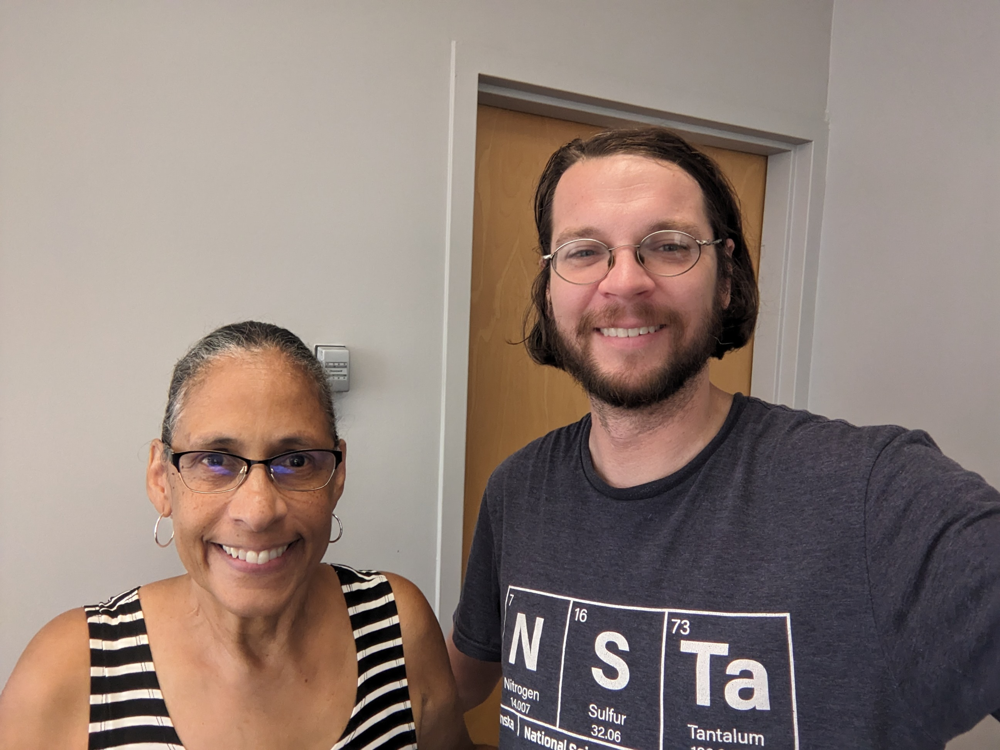
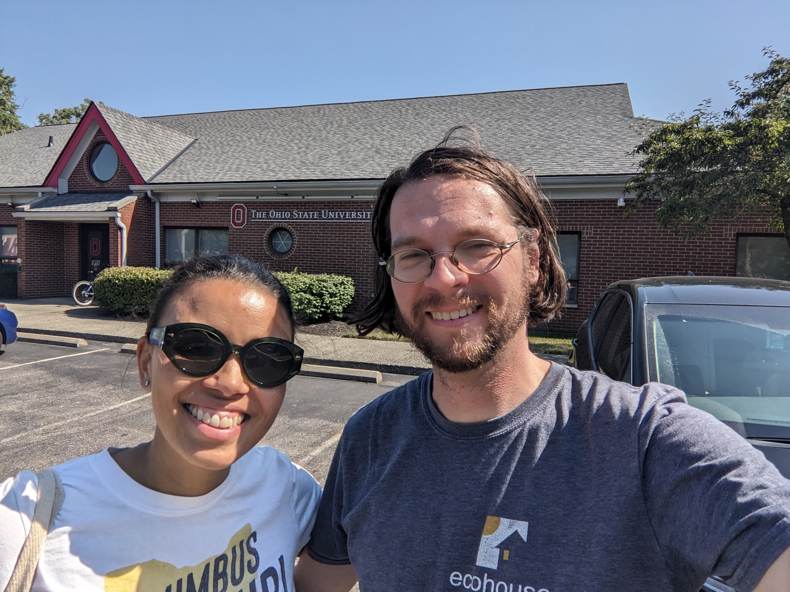

Endorsements
Organizations
I am a scientist and I am very proud to be endorsed by 3.14 Action

Political Figures

Antoinette Miranda (outgoing state board of education member representing District 6)

Morgan Harper, former candidate for US Senate in the democratic primary, founder of the non-profit Columbus Stand Up which advocates for Climate Justice and predatory utility practices
Individuals:
Dr. Steve Lewis, Teacher and Director of the Center for Mathematical Reasoning at Columbus School for Girls in Bexley, Ohio
Jesse Schroeder, School Social Worker, South Western City Schools
Prof. Andrew Heckler, Professor and Physics Education Researcher, Ohio State University, Department of Physics
Bridget Tharp, Foster mom, non-profit fundraising professional, Columbus Future 50 honoree (class of 2021)